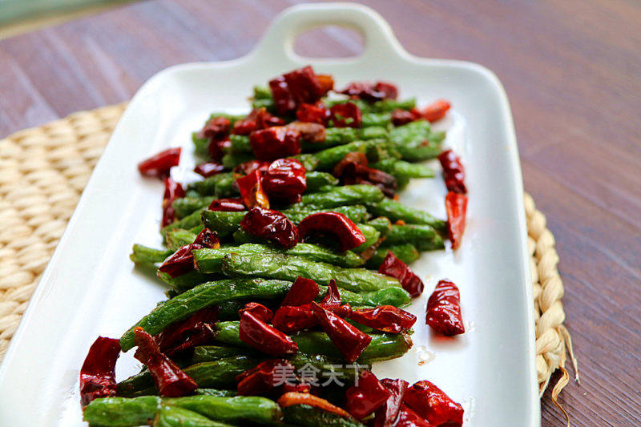

干煸豆角(Spicy Sichuan Beans)

传统的口水鸡做法是要将整鸡用葱姜水煮半小时左右，然后倒掉汤汁只取鸡肉。
但是用这款美的蒸烤箱，纯蒸功能能保证鸡肉的鲜味和营养不流失在水中，更加鲜嫩美味；
与传统的蒸锅、煮锅相比，密封性能更好，不会使厨房变得闷热潮湿，自动定时功能也很方便。
一起来看看做法吧。
食材
- 四季豆 适量
- 干辣椒 适量
- 油 适量
- 葱 适量
- 姜 适量
- 蒜 适量
- 盐 适量
- 酱油 适量
- 鸡精 适量
步骤
- 1豆角摘干净、控干水分待用，
豆角放得约干越好，因为小美是用过油的方式起皱。
- 锅中入适量油，若煸炒的亲油就放正常炒菜的量。
- 锅中开始冒烟，用锅盖遮挡放入豆角，少油的亲直接放入就行。
- 过油到表面起皱哦，煸炒的话也是炒成这个样子。然后豆角捞出待用。
- 锅中少油，中火，放入干辣椒、姜、蒜，炒香。
- 下豆角、盐、鸡精、酱油。转大火，快速翻炒，混合均匀即可。